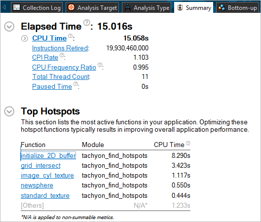
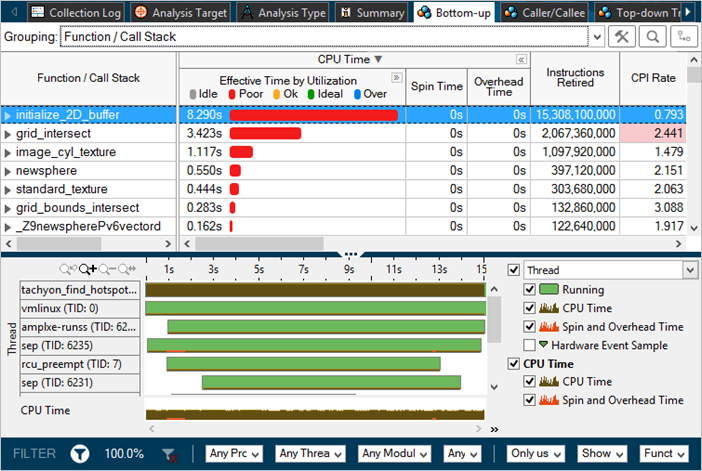
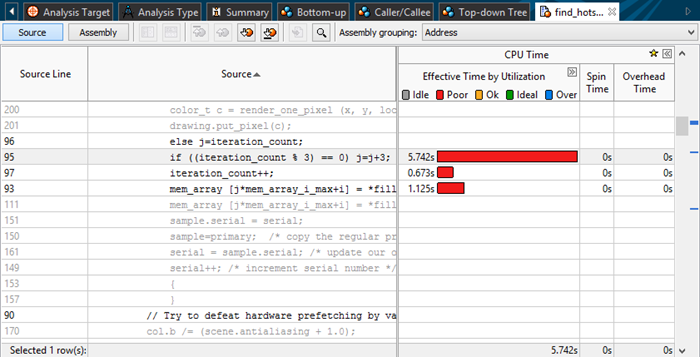

Enabling Performance Collection on an Embedded Linux* System
After the target device sends the performance results to the host system, the results appear in Intel VTune Amplifier for Systems with the Summary window active.

Review the information on the Summary window to see a high-level overview of any performance optimization opportunities. For example, the Top Hotspots section lists the functions that took the most time to complete. Click a function name to switch to the Bottom-up window and view more detailed information about that function.

The Bottom-up window shows function data in the grid at the top of the window and a timeline of thread activity at the bottom of the window. Use this window to identify the most time-consuming functions and analyze their call flow at the bottom-level - from a function to its parent functions. You can zoom in and filter on a section of the timeline for a more detailed view.
Double-click a function name to switch to the source code and assembly code view. VTune Amplifier will automatically navigate to the source code line related to the function you selected.
